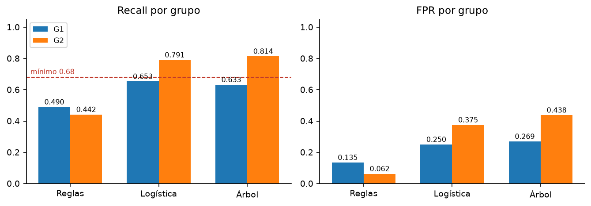
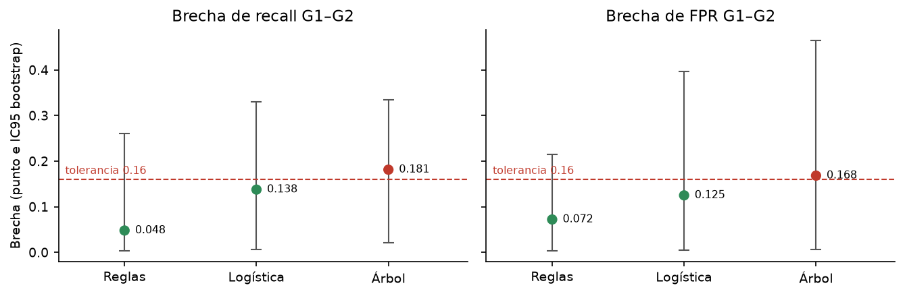
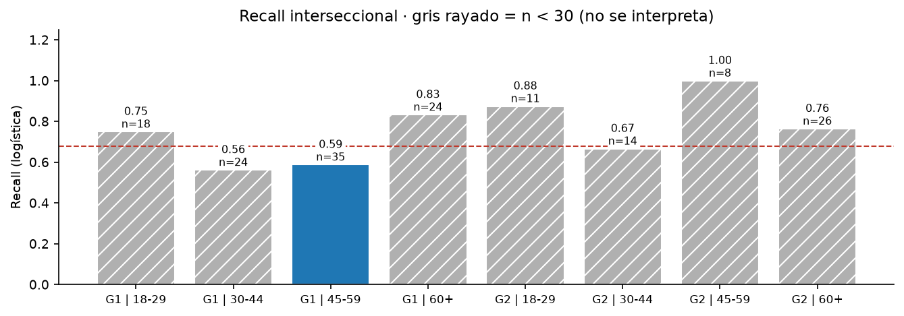
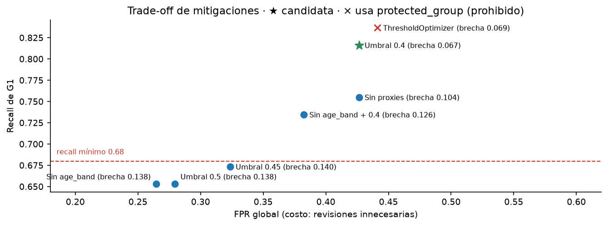

| Elemento | Definición (student_inputs/lab11_impact.yml) |
|---|---|
| Finalidad | Ordenar la cola de revisión según la probabilidad estimada de incidente. El sistema solo prioriza; no decide sobre los casos. |
| Decisión asistida | En qué orden revisa el analista. La decisión sobre cada caso la toma y firma el operador. |
| Usuarios / afectados | Usuarios: analistas territoriales y su supervisor. Afectados: personas y hogares de los casos, en especial G2, que tiene mayor tasa base (0.639 frente a 0.497 en G1). |
| Propietario | Product Owner institucional (accountable). La autoridad de retiro corresponde al Institutional Owner. |
| Alternativa no predictiva | Orden de llegada (FIFO) más reglas transparentes: previous_incidents ≥ 5 o exposure ≥ 0.7. Es también el baseline de rollback. |
| Uso prohibido | Intervención automática, elegibilidad, declaración de emergencia, perfilado de poblaciones reales, y uso de protected_group para decidir. |
| Retiro / apelación | Se retira si recall < 0.68, si alguna brecha supera 0.16, si hay uso fuera de alcance, si aparece un identificador directo o si una apelación confirma daño. La apelación la resuelve un supervisor distinto del operador original en ≤ 5 días hábiles. |
Proporcionalidad. El modelo solo se justifica si mejora a la alternativa menos invasiva en el daño prioritario, que es no revisar a tiempo un caso con riesgo real. La evidencia de la sección 3 muestra que sí lo hace: las reglas alcanzan un recall de 0.467 y el modelo 0.717–0.848. El modelo además es mínimo (logística de 3.6 KB, sin identificadores) y su autoridad se limita a ordenar una cola revisada por personas.
Interesados (stakeholders.csv, 5 actores):
| Actor | Beneficio | Daño posible | Poder | Participación |
|---|---|---|---|---|
| Persona afectada | Atención temprana | Falso negativo o revisión intrusiva | bajo | Aviso, apelación, consulta previa |
| Operador | Menos carga de búsqueda | Sesgo de automatización | medio | Puede reordenar e ignorar el ranking; reporta errores |
| Institutional owner | Eficiencia y trazabilidad | Daño reputacional y legal | alto | Firma GO/LIMITAR/STOP; autoridad de retiro |
| Equipo de datos | Producto evaluable | Presión para desplegar | medio | Mantiene y audita; no decide el despliegue |
| Representantes de afectados | Voz colectiva | Exclusión del diseño | bajo | Revisan resultados por grupo antes del despliegue |
Hay 10 riesgos con escenario, afectado, control, responsable y evidencia (student_inputs/risk_register.csv). La prioridad es probabilidad × impacto (escala 1–4) y la calcula scripts/lab11_impact.py en reports/lab11/risk_register_scored.csv.
| ID | Escenario (resumen) | P | I | Prio. | Responsable | Residual |
|---|---|---|---|---|---|---|
| R02 | Proxies: infrastructure_score y exposure difieren entre grupos | 3 | 3 | 9 | Data Scientist | medio |
| R09 | Subgrupos interseccionales pequeños con métricas inestables | 3 | 3 | 9 | Data Scientist | medio |
| R01 | Recall desigual: G1 0.653 frente a G2 0.791; FPR mayor en G2 | 2 | 4 | 8 | Data Scientist | alto |
| R07 | Deriva temporal con un test de solo 160 casos | 2 | 4 | 8 | ML Engineer | alto |
| R03 | age_band es sensible pero se usa como predictor | 2 | 3 | 6 | Data Scientist | medio |
| R10 | La etiqueta registra incidentes, no daño real (zona Sur 0.616) | 2 | 3 | 6 | Product Owner | medio |
| R06 | Sesgo de automatización del operador | 3 | 2 | 6 | Product Owner | medio |
| R04 | Uso fuera de alcance (elegibilidad, intervención) | 1 | 4 | 4 | Product Owner | medio |
| R05 | Carga de identificadores directos | 2 | 2 | 4 | Data Engineer | bajo |
| R08 | Falta de transparencia y de apelación | 1 | 3 | 3 | Institutional Owner | bajo |
Lectura crítica del orden. El puntaje coloca primero a R02 y R09, pero trato R01 como el riesgo principal. Tiene impacto 4 y residual alto, y produce exactamente el daño que el sistema busca evitar. La puntuación ordena la atención, pero no mide el daño humano. Además, los tres riesgos principales recaen en el mismo rol, de modo que quien construye el modelo es también quien lo audita. Por eso el Product Owner valida las mitigaciones.
Corrección por evidencia. En LAB11 supuse que G2 tendría menor recall. LAB12 lo refutó: el recall más bajo es el de G1. R01 se reescribió con los datos (commit 4c36607). El registro se trató como un documento vivo y no como un conjunto de supuestos fijos.
| Función NIST AI RMF | Estado | Evidencia en el repositorio |
|---|---|---|
| GOVERN | Implementado | Propietario, autoridad de retiro, usos prohibidos (configs/governance.yml), RACI |
| MAP | Implementado | Finalidad, 5 interesados, 10 riesgos con responsable y evidencia |
| MEASURE | Implementado (LAB12) | Métricas globales, por grupo e interseccionales con n e IC95; mitigaciones |
| MANAGE | Parcial | Condición de retiro, apelación y rollback documentados; runbook y simulacro en LAB13 / E08 |
La auditoría usa MetricFrame de Fairlearn. protected_group se excluye de las variables predictoras y solo se usa para auditar. El umbral es 0.5 y el test tiene n = 160 (G1 101, G2 59). Los IC95 provienen de un bootstrap de 500 remuestreos con semilla 42 (scripts/lab12_compare.py).
| Modelo | Acc. | Recall | FPR | Rec. G1 | Rec. G2 | FPR G1 | FPR G2 | Brecha recall [IC95] | Brecha FPR [IC95] | KB |
|---|---|---|---|---|---|---|---|---|---|---|
| Reglas (no predictivo) | 0.644 | 0.467 | 0.118 | 0.490 | 0.442 | 0.135 | 0.062 | 0.048 [0.004, 0.261] | 0.072 [0.003, 0.215] | 0 |
| Logistic | 0.719 | 0.717 | 0.279 | 0.653 | 0.791 | 0.250 | 0.375 | 0.138 [0.007, 0.330] | 0.125 [0.005, 0.397] | 3.6 |
| Árbol (prof. 5) | 0.706 | 0.717 | 0.309 | 0.633 | 0.814 | 0.269 | 0.438 | 0.181 [0.021, 0.334] | 0.168 [0.006, 0.465] | 7.9 |


Interseccional (grupo × edad). El mínimo documentado es min_group_size: 30. Solo G1 | 45-59 (n = 35) tiene soporte, con recall 0.588 y FPR 0.389, peor que el global. Los otros 7 subgrupos (n = 8 a 26) se reportan en reports/lab12/support_warnings.json, pero no se interpretan.

Una brecha no es prueba de discriminación causal. Puede venir de la etiqueta (R10), de proxies (R02), del umbral o del azar en una muestra pequeña. Es una señal que obliga a investigar con más datos, análisis por variable y revisión del proceso que genera target.
Las mitigaciones se evaluaron sobre la logística con scripts/lab12_mitigation.py, y los resultados están en reports/lab12/mitigation.csv.
| Variante | Acc. | Recall | FPR | Rec. G1 | Rec. G2 | Brecha rec. | Brecha FPR | ¿Usa grupo? | Veredicto |
|---|---|---|---|---|---|---|---|---|---|
| Umbral 0.5 (referencia) | 0.719 | 0.717 | 0.279 | 0.653 | 0.791 | 0.138 | 0.125 | no | G1 bajo el mínimo |
| Umbral 0.4 | 0.731 | 0.848 | 0.426 | 0.816 | 0.884 | 0.067 | 0.096 | no | Candidata |
| Sin age_band | 0.725 | 0.717 | 0.265 | 0.653 | 0.791 | 0.138 | 0.144 | no | Minimiza; no corrige G1 |
| Sin age_band + umbral 0.4 | 0.719 | 0.793 | 0.382 | 0.735 | 0.860 | 0.126 | 0.072 | no | Alternativa para el piloto |
| Sin proxies | 0.650 | 0.707 | 0.426 | 0.755 | 0.651 | 0.104 | 0.067 | no | Traslada el daño a G2 |
| ThresholdOptimizer (eq. odds) | 0.700 | 0.804 | 0.441 | 0.837 | 0.767 | 0.069 | 0.168 | sí | Rechazada |

protected_group y lleva a G1 sobre 0.68 con la menor brecha (0.067); ThresholdOptimizer queda descartado por usar el grupo.age_band reduce datos sensibles, pero con umbral 0.4 baja el recall de G1 a 0.735. La tensión queda explícita y se decidirá con los datos del piloto.protected_group al predecir, lo que la política prohíbe, y además falla la brecha de FPR.| Tipo | Contenido aplicado | Alcance en este caso |
|---|---|---|
| Obligación legal | Ley 172-13 de protección de datos personales de la República Dominicana (consentimiento, finalidad, calidad de datos y derechos del titular) y Constitución dominicana (igualdad y no discriminación, intimidad). | Aplicaría si el sistema usara datos reales de personas. Con datos sintéticos no hay titulares; sirve como diseño preventivo (sin identificadores, minimización). |
| Marco voluntario | NIST AI RMF 1.0 (GOVERN, MAP, MEASURE, MANAGE); Recomendación de la OCDE sobre IA; buenas prácticas de Fairlearn. | Adoptado de forma voluntaria para estructurar el registro, la auditoría y la gestión. |
| Recomendación ética | Revisión humana con autoridad real, apelación, no usar el grupo protegido para decidir, priorizar el daño a quien más lo sufre, reportar los subgrupos sin soporte en lugar de ocultarlos. | Son decisiones de valor del equipo, que este documento justifica pero que no derivan de una norma. |
uv sync --frozen uv run pytest -q # 10 passed uv run python scripts/lab11_impact.py # risk_register_scored.csv, rmf_summary.json uv run python scripts/lab12_audit.py --model logistic uv run python scripts/lab12_audit.py --model tree uv run python scripts/lab12_compare.py # baseline + IC95 + soporte interseccional uv run python scripts/lab12_mitigation.py # mitigation.csv uv run python scripts/validate_lab12_decision.py # decision_status: documenteduv run --with matplotlib python scripts/make_figures.py # figuras 1–4 (docs/entregables/figs)
Entorno: Python 3.12.14, fairlearn 0.12.0, scikit-learn 1.9.1, Windows 11, semilla 42. Historial Git: cd8fa55 init → 7abf7c6 fix scripts base → 3c31f14 LAB11 → 4c36607 LAB12 → f3045de LAB13 (tag u04-lab13), más los commits de mitigación y documentación.
Hallazgo técnico: scripts/lab11_impact.py y simulate_incident.py del proyecto base tenían strings sin cerrar (SyntaxError). Se corrigieron en un commit separado. Además, DECISION_RECORD.md se sobrescribía en cada ejecución; ahora solo se crea si no existe.
Referencias. NIST (2023). AI Risk Management Framework (AI RMF 1.0). DOI 10.6028/NIST.AI.100-1. · OECD (2019). Recommendation of the Council on Artificial Intelligence. DOI 10.1787/cc2e1d3e-en. · Fairlearn Contributors. Performing a Fairness Assessment, documentación oficial. · República Dominicana. Ley 172-13 sobre protección integral de datos personales (2013).
Herramienta: Claude (Anthropic, modelo Claude Opus 5.5) mediante Claude Code. Prompts relevantes: «aydame» con el manual LAB11 y el enunciado E07; «continuar si falta algo me indica» con los manuales LAB12/LAB13; «PROCEDER CON EL PUNTO 2» para este documento. La IA configuró el entorno, corrigió los scripts base, ejecutó las auditorías, escribió lab12_compare.py y lab12_mitigation.py, y redactó borradores de los insumos y de este documento. Verificaciones automáticas: las pruebas y los validadores indicados arriba. Errores detectados durante el proceso: la hipótesis de LAB11 sobre G2, refutada por los datos, y un commit que incluyó por error una copia anidada del proyecto, que se retiró.
[Completar por el estudiante] Qué verificó personalmente (p. ej., recalcular una métrica de fairness_by_group.csv, revisar la escala de los 10 riesgos, comprobar la Ley 172-13 en su fuente) y qué cambió del borrador de la IA y por qué.
La IA no decidió los valores del análisis. El estudiante revisó y asume las puntuaciones de riesgo, la interpretación normativa y la decisión final, y puede defender cada elemento.